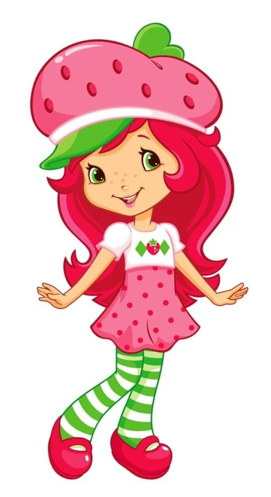

Curiosidades sobre Moranguinho 🍓👀
Descubra curiosidades sobre Moranguinho, seus amigos e o mundo doce e colorido em que eles vivem.
Descubra curiosidades sobre Moranguinho, seus amigos e o mundo doce e colorido em que eles vivem.

Você Sabia?
1-
Moranguinho é conhecida por ser uma menina doce, carinhosa e amiga. Ela gosta de ajudar seus amigos e viver novas aventuras.
2-
Moranguinho vive suas aventuras ao lado de vários amigos, como Cerejinha,Framboezinha, Laranjinha e outros personagens da turma
3-
Mingau é o gatinho que acompanha Moranguinho em muitas de suas aventuras.Ele é um personagem muito querido pela turma.
4-
As histórias de Moranguinho mostram como a amizade, a união e o carinho são importantes para enfrentar os desafios juntos.
5-
O universo de Moranguinho é conhecido por suas cores alegres, frutas, doces e personagens divertidos.
6-
Moranguinho e seus amigos adoram brincar, conversar, ajudar uns aos outros e vivem novas aventuras juntos.